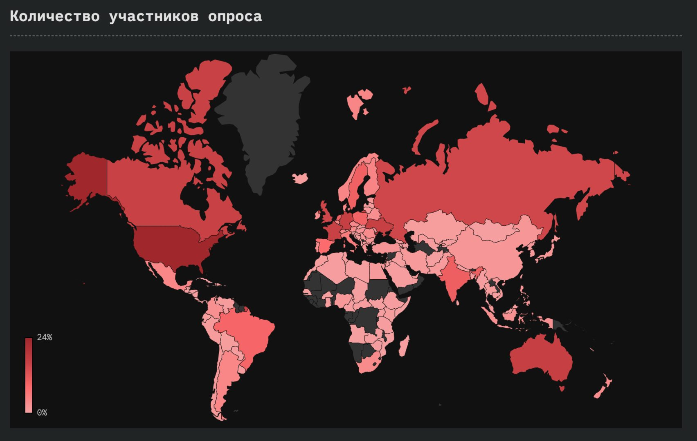
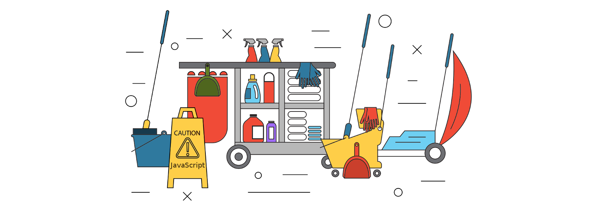

Наши контакты
Тел:8(812)499-00-80
Дата публикации:
В этот раз опросили более 20 000 разработчиков из 153 стран.
Авторы опроса привели данные только тех людей, которые согласились на опрос и прошли его полностью. Реальное количество JS-разработчиков в мире, естественно, будет отличаться. Больше всего откликов на опрос пришло из США, Германии и Австралии. Россия и Украина тоже участвовали достаточно активно.
Более 50 % разработчиков зарабатывают от 50 000 $ в год: Читать далее...
Дата публикации:
Хакеры устанавливают бэкдоры на сайтах интернет-магазинов через XSS-уязвимость в плагине WordPress. Пользоваться плагином могут только администраторы и привилегированные пользователи — это позволяет выполнить вредоносный код с правами высокого уровня.
У плагина Abandoned Cart Lite for WooCommerce больше 20 тысяч загрузок, он широко распространён. Разработчики уже выпустили патч в версии 5.2. Читать далее...
Дата публикации:
В небольших React-проектах достаточно эффективно хранить все методы компонентов в самих компонентах. В проектах среднего размера вам может понадобиться сделать из метода компонента вспомогательную функцию. В этом случае можно использовать классы (вместо экспорта отдельных функций и переменных).
В обычном рефакторинге вы берёте функцию для компонента и выносите её в другой файл. Читать далее...